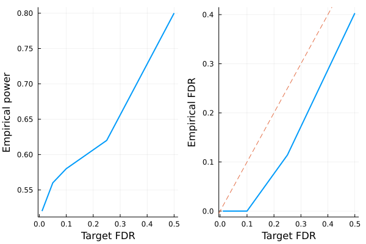

Fixed-X knockoffs
This tutorial generates fixed-X knockoffs and checks some of its basic properties. The methodology is described in the following paper
Barber, Rina Foygel, and Emmanuel J. Candès. "Controlling the false discovery rate via knockoffs." The Annals of Statistics 43.5 (2015): 2055-2085.
For fixed-X knockoffs, we assume $n > 2p$ where $n$ is sample size and $p$ is number of covariates, although in principle this method can be adapted to work for $n > p$ case.
# load packages needed for this tutorial
using Revise
using Knockoffs
using Plots
using Random
using GLMNet
using LinearAlgebra
using Distributions
gr(fmt=:png);Generate knockoffs
We will
- Simulate Gaussian design matrix
- Generate knockoffs. Here we generate minimum variance-based reconstructability (MVR) knockoffs as described in this paper. MVR and maximum entropy (ME) knockoffs tend to have higher power over SDP or equi-correlated knockoffs. For more options, see the fixed_knockoffs API.
Random.seed!(2022) # set random seed for reproducibility
X = randn(1000, 200) # simulate Gaussian matrix
normalize_col!(X) # normalize columns of X
# make MVR knockoffs
@time mvr = fixed_knockoffs(X, :mvr); 0.787978 seconds (91 allocations: 21.617 MiB, 34.92% gc time)The return type is a Knockoff struct, which contains the following fields
struct GaussianKnockoff{T} <: Knockoff
X::Matrix{T} # n × p design matrix
X̃::Matrix{T} # n × p knockoff of X
s::Vector{T} # p × 1 vector. Diagonal(s) and 2Σ - Diagonal(s) are both psd
Σ::Symmetric{T, Matrix{T}} # p × p covariance matrix
method::Symbol # method for solving s
endThus, to access these fields, one can do
X̃ = mvr.X̃ # type X̃ by X\tilde<tab>
s = mvr.s
Σ = mvr.Σ; # type Σ by \Sigma<tab>We can check some knockoff properties. For instance, is it true that $X'\tilde{X} \approx \Sigma - diag(s)$?
# compare X'X and Σ-diag(s) visually
[vec(X'*X̃) vec(Σ - Diagonal(s))]40000×2 Matrix{Float64}:
0.479139 0.479139
-0.0184072 -0.0184072
-0.0274339 -0.0274339
-0.0359705 -0.0359705
0.0202419 0.0202419
0.0514162 0.0514162
0.0154546 0.0154546
-0.0250518 -0.0250518
-0.0468651 -0.0468651
-0.0358149 -0.0358149
-0.00507354 -0.00507354
-0.0238295 -0.0238295
0.0140797 0.0140797
⋮
0.0192772 0.0192772
-0.0157356 -0.0157356
-0.0116071 -0.0116071
0.0338745 0.0338745
0.029913 0.029913
-0.03115 -0.03115
0.0437582 0.0437582
0.00350153 0.00350153
0.00382205 0.00382205
-0.0072671 -0.0072671
0.00966888 0.00966888
0.493225 0.493225LASSO example
Let us apply the generated knockoffs to the model selection problem
Given response $\mathbf{y}_{n \times 1}$, design matrix $\mathbf{X}_{n \times p}$, we want to select a subset $S \subset \{1,...,p\}$ of variables that are truly causal for $\mathbf{y}$.
Simulate data
We will simulate
\[\mathbf{y}_{n \times 1} \sim N(\mathbf{X}_{n \times p}\mathbf{\beta}_{p \times 1} \ , \ \mathbf{\epsilon}_{n \times 1}), \quad \epsilon_i \sim N(0, 0.5)\]
where $k=50$ positions of $\mathbf{\beta}$ is non-zero with effect size $\beta_j \sim N(0, 1)$. The goal is to recover those 50 positions using LASSO.
# set seed for reproducibility
Random.seed!(2022)
# simulate true beta
n, p = size(X)
k = 50
βtrue = zeros(p)
βtrue[1:k] .= 3randn(50)
shuffle!(βtrue)
# find true causal variables
correct_position = findall(!iszero, βtrue)
# simulate y using normalized X
y = X * βtrue + rand(Normal(0, 0.5), n);Standard LASSO
Lets try running standard LASSO, which will produce $\hat{\mathbf{\beta}}_{p \times 1}$ where we typically declare variable $j$ to be selected if $\hat{\beta}_j \ne 0$. We use LASSO solver in GLMNet.jl package, which is just a Julia wrapper for the GLMnet Fortran code.
How well does LASSO perform in terms of power and FDR?
# run 10-fold cross validation to find best λ minimizing MSE
lasso_cv = glmnetcv(X, y)
λbest = lasso_cv.lambda[argmin(lasso_cv.meanloss)]
# use λbest to fit LASSO on full data
βlasso = glmnet(X, y, lambda=[λbest]).betas[:, 1]
# check power and false discovery rate
power = length(findall(!iszero, βlasso) ∩ correct_position) / k
FDR = length(setdiff(findall(!iszero, βlasso), correct_position)) / count(!iszero, βlasso)
println("Lasso power = $power, FDR = $FDR")Lasso power = 0.86, FDR = 0.5222222222222223Although LASSO have pretty high power, about half of all discoveries are false positives.
Knockoff+LASSO
Now lets try applying the knockoff methodology. Recall that consists of a few steps
- Run LASSO on $[\mathbf{X} \mathbf{\tilde{X}}]$
- Compare feature importance score $W_j = \text{score}(x_j) - \text{score}(\tilde{x}_j)$ for each $j = 1,...,p$. Here we use $W_j = |\beta_j| - |\tilde{\beta}_{j}|$
- Choose target FDR $q \in [0, 1]$ and compute
\[\tau = min_{t}\left\{t > 0: \frac{{\{\#j: W_j ≤ -t}\}}{max(1, {\{\#j: W_j ≥ t}\})} \le q\right\}\]
In step 1, $[\mathbf{X} \mathbf{\tilde{X}}]$ is written for notational convenience. In practice one must interleave knockoffs with the original variables, where either the knockoff come first or the original genotype come first with equal probability. This is due to the inherent bias of LASSO solvers: when the original and knockoff variable are equally valid, the one listed first will be selected.
@time knockoff_filter = fit_lasso(y, X, mvr.X̃); 6.628466 seconds (6.79 M allocations: 526.499 MiB, 3.44% gc time, 59.50% compilation time)The return type is now a KnockoffFilter, which contains the following information
struct KnockoffFilter{T}
XX̃ :: Matrix{T} # n × 2p matrix of original X and its knockoff interleaved randomly
original :: Vector{Int} # p × 1 vector of indices of XX̃ that corresponds to X
knockoff :: Vector{Int} # p × 1 vector of indices of XX̃ that corresponds to X̃
W :: Vector{T} # p × 1 vector of feature-importance statistics for fdr level fdr
βs :: Vector{Vector{T}} # βs[i] is the p × 1 vector of effect sizes corresponding to fdr level fdr_target[i]
a0 :: Vector{T} # intercepts for each model in βs
τs :: Vector{T} # knockoff threshold for selecting Ws correponding to each FDR
fdr_target :: Vector{T} # target FDR level for each τs and βs
debiased :: Bool # whether βs and a0 have been debiased
endGiven these information, we can e.g. visualize power and FDR trade-off:
FDR = knockoff_filter.fdr_target
empirical_power = Float64[]
empirical_fdr = Float64[]
for i in eachindex(FDR)
# extract beta for current fdr
βknockoff = knockoff_filter.βs[i]
# compute power and false discovery proportion
power = length(findall(!iszero, βknockoff) ∩ correct_position) / k
fdp = length(setdiff(findall(!iszero, βknockoff), correct_position)) / max(count(!iszero, βknockoff), 1)
push!(empirical_power, power)
push!(empirical_fdr, fdp)
end
# visualize FDR and power
power_plot = plot(FDR, empirical_power, xlabel="Target FDR", ylabel="Empirical power", legend=false, w=2)
fdr_plot = plot(FDR, empirical_fdr, xlabel="Target FDR", ylabel="Empirical FDR", legend=false, w=2)
Plots.abline!(fdr_plot, 1, 0, line=:dash)
plot(power_plot, fdr_plot)
Conclusion:
- LASSO + knockoffs controls the false discovery rate at below the target (dashed line). Thus, one trade power for FDR control.
- The power of standard LASSO is better, but it comes with high empirical FDR that one cannot control via cross validation.
If we repeated the simulation multiple times, we expect the empirical FDR to hug the target FDR more closely.